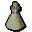
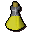
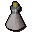
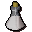

Limpwurt root
| Config name | limpwurt_root |
| Item id | 225 |
| Value | 7 gp |
| Weight | 7g |
| Members | No |
| Tradeable | Yes |
| Stackable | No |
| Defined in | scripts/skill_herblore/configs/brewing/potions_additives.obj |
Limpwurt root
The root of a limpwurt plant.
Used to make
| Skill | Level | XP | Ingredients | Tool | How | Where | Makes |
|---|---|---|---|---|---|---|---|
| Herblore | 12 | 50.0 |  Unfinished potion, | use on item |  Strength potion(3)members | ||
| Herblore | 55 | 125.0 |  Unfinished potion, | use on item |  Super strength(3)members |
Dropped by
| NPC | Level | Quantity | Rarity | Via | Notes |
|---|---|---|---|---|---|
| 28 | 1 | 11/64 (17.19%) | |||
| 42 | 1 | 21/128 (16.41%) | |||
| 32 | 1 | 2/23 (8.7%) | |||
| 28 | 1 | 11/128 (8.59%) | |||
| 33 | 1 | 3/128 (2.34%) | |||
| 37 | 1 | 1/128 (0.78%) | |||
| 37 | 2 | 1/128 (0.78%) | |||
| 24 | 1 | 1/256 (0.39%) | |||
| 24 | 1 | 1/256 (0.39%) | |||
| 24 | 1 | 1/256 (0.39%) | |||
| 24 | 1 | 1/256 (0.39%) | |||
| 24 | 1 | 1/256 (0.39%) | |||
| 24 | 1 | 1/256 (0.39%) |
Quests
Holy Grail Temple of Ikov (Armadyl)
Referenced in scripts
scripts/_test/scripts/cheats/cheat_bank.rs2scripts/_test/scripts/debug/debug_quests.rs2scripts/areas/area_canifis/scripts/canafis_citizen.rs2scripts/areas/area_varrock/scripts/apothecary.rs2scripts/drop tables/scripts/chaos_druid_warrior.rs2scripts/drop tables/scripts/druid.rs2scripts/drop tables/scripts/giant.rs2scripts/drop tables/scripts/hobgoblin.rs2scripts/drop tables/scripts/tribesman.rs2scripts/quests/quest_grail/scripts/black_knight_titan.rs2scripts/quests/quest_ikov/scripts/winelda.rs2scripts/skill_herblore/scripts/brewing/brew_potion.rs2